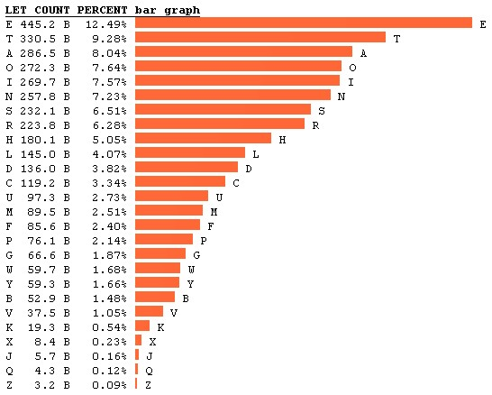
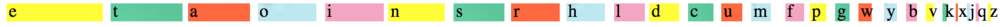
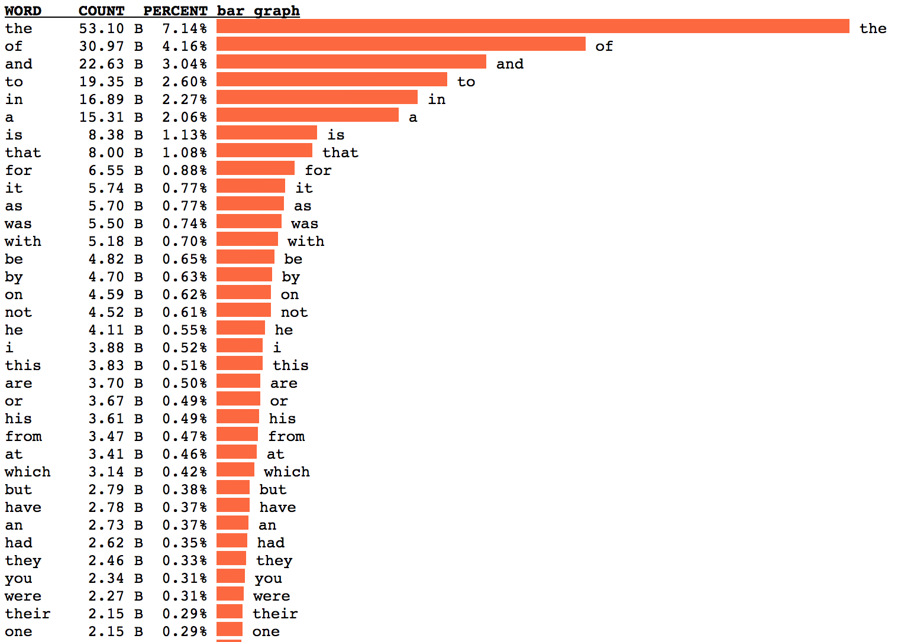
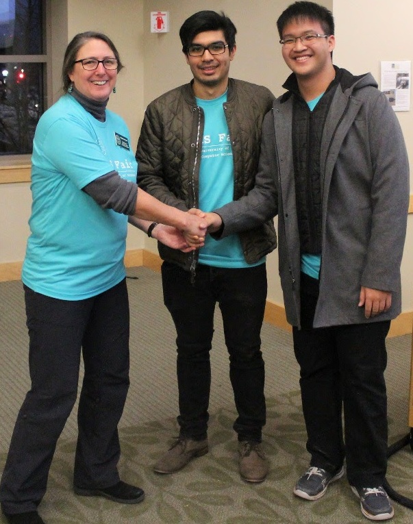

Mono-substitution Cipher is simply a fancy term of reassigning
all the alphabets of a text in a 1-1 manner. This is the oldest,
simpliest and least secure encryption (because even I can decrypt it
... kind of).
To be uneccearily technical, let's look at the precise definition of this cipher.
Let A be the set of all given alphabets. There exists a bijective function f
that maps A to A. Since f is a bijective function, this means there exists an inverse
function of f. In short, this means Mono-substitution Cipher is crackable.
The key tells you which letters get assigned to which. My goal is to be able to
decrypt a ciphered text without accessing the key and this project investigates
specifically in English passages using frequecny analysis. The following diagram
demonstrates frequency of English letter counts.

or if you prefer colored representation like I do.

Since there is a huge difference in counts between most frequent letter e
and second most frequent letter t , we can make an assumption that the
most frequent letter in the ciphered text must be e originally given that
the English passage is large enough. Now that we have decrypted one of the 26 letters,
the rest is super easy to crack. The following diagram shows that
the is the most frequent word in English. Given that we have already decrypted letter
e , we can easily decrypt letter t and h by finding the most
frequent 3-letter word that ends with letter e in the ciphered text.

Following along with the logic, I managed to decrypt over 80% of most encrypted English passages.
This might not sound like a lot but it is more than enough to read and understand these encrypted
text. My next goal with this project is utilising combintorial techniques to analyse various patterns in the
board game SCRAMBLE.
I was fortunate to be awarded first place at
UVM CS Fair with this cryptography project in December 2016.

Source of all frequency visulisation:
http://norvig.com/mayzner.html
by Dr. Peter Norvig
For more detail, check out my code